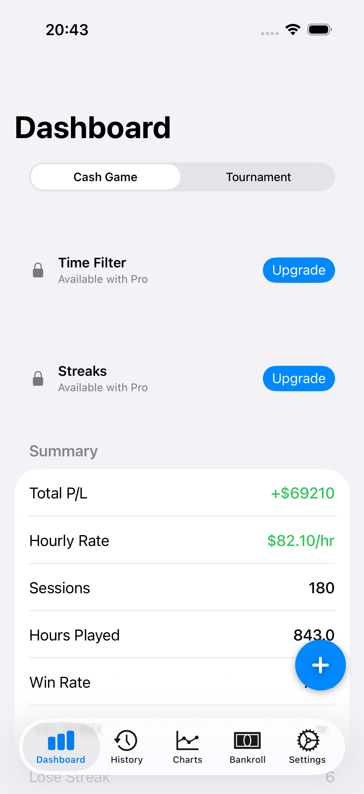
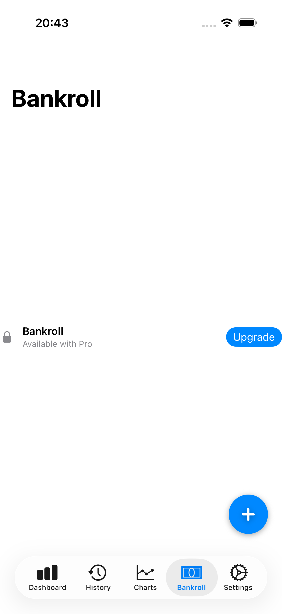
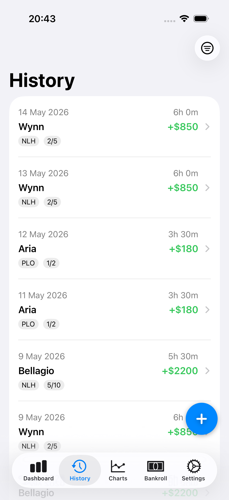
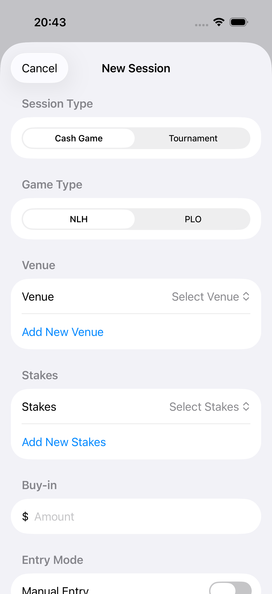
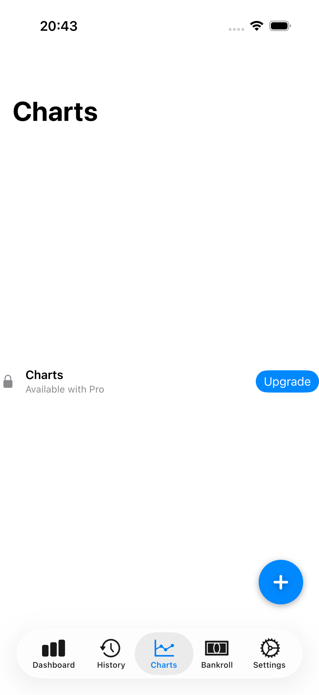

The tracker built by a player, not a spreadsheet
Most of us track sessions in a messy spreadsheet we forget to update, or a note at the cashier that never goes anywhere. PokerTrack Pro fixes that with a fast, native app that does the math for you.
See it in action
Dashboard, history, charts, and bankroll — all native SwiftUI, light and dark mode.






Everything a live grinder needs
Live session timer
Start a session, add rebuys, cash out. The timer keeps running even if you background or force-quit the app.
Apple Watch companion
Glance at elapsed time, total invested, and current P/L from your wrist — and add rebuys without pulling out your phone.
Real stats that matter
Hourly rate, win rate, streaks, downswings, and per-venue and per-stakes breakdowns with week/month/year filters.
Cash & tournament modes
Track cash games and MTTs side by side, with tournament ROI, ITM%, average and best finish.
Bankroll tracker
An opt-in bankroll that auto-updates from your net session results, plus manual deposits and withdrawals.
Expenses & notes
Log food, tips, and transport per session for true net P/L, and add timestamped notes while you play.
Charts & export
Cumulative profit, per-session, by-venue and by-stakes charts. Export your history to CSV or Markdown.
Private iCloud sync
Your sessions sync across your own devices via CloudKit. No accounts, no servers, your data stays yours.
Multi-currency
Track in any of 10 currencies including USD, EUR, GBP, ILS, CAD, AUD, JPY, and more.
Free to start. Pro when you're ready.
No ads, ever. The free tier is a fully usable tracker — upgrade only if you want the power features.
Free
- Full live session tracking
- Dashboard stats & hourly rate
- Cash & tournament sessions
- Last 15 sessions of history
- No ads
Pro
- Everything in Free
- Unlimited session history
- Charts & CSV / Markdown export
- Bankroll tracker
- Apple Watch companion
- 7-day free trial
Frequently asked questions
Is PokerTrack Pro free?
Yes. The free tier includes full live session tracking, dashboard stats, and both cash and tournament sessions, with your last 15 sessions of history and no ads. Pro ($19.99/year, with a 7-day free trial) unlocks unlimited history, charts, export, the bankroll tracker, and the Apple Watch app.
Does it work on Apple Watch?
Yes. The Apple Watch companion lets you see elapsed time, total invested, and current profit/loss during a live session, and add rebuys directly from your wrist.
Can I track tournaments as well as cash games?
Absolutely. PokerTrack Pro has a dedicated tournament mode with add-ons, entries, finishing position, and prize won, plus tournament-specific stats like ROI, ITM%, and average finish.
Is my data private?
Yes. There are no user accounts and no external servers. Your sessions are stored on your device and synced privately across your own devices through Apple's iCloud (CloudKit).
Can I export my session history?
Pro users can export their full history to CSV (numeric columns, ready for Excel or Google Sheets) or Markdown, and share it via the iOS share sheet.
What devices and iOS version do I need?
PokerTrack Pro is a native app for iPhone (iOS 17 or later) and Apple Watch (watchOS 10 or later).